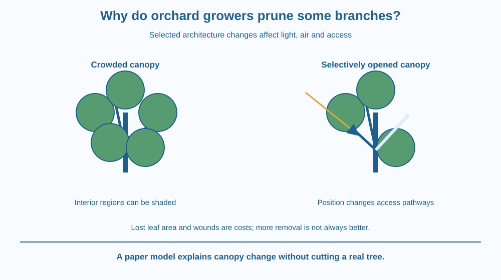

Explain how selective branch removal changes a tree's canopy architecture. Connect light distribution, airflow and access with management goals. Distinguish a useful structural change from the assumption that more cutting always improves growth or fruit production.
An orchard tree has many leaves, yet some interior branches receive little light. A grower removes selected branches while leaving much of the canopy. Why take away living material from a plant expected to grow and produce fruit?
The goal can involve rearranging access within the remaining structure. A dense canopy is not simply a larger version of an open canopy; light, air and working space are distributed differently.
Pruning is therefore a targeted design decision about a living structure, not a contest to remove the greatest mass of branches.
A canopy is the above-ground arrangement of branches and leaves. Its architecture affects how light penetrates, how air moves and how people can inspect or harvest the tree. Different species and growing systems have different suitable forms.
Leaves near the outside can shade interior regions. Selectively opening part of the canopy can change which remaining leaves receive useful illumination. We take the earlier photosynthesis mechanism as background; the new target is spatial distribution within a managed tree.
Air movement can also change. A dense interior may retain different humidity conditions from a more open structure. The effect on health depends on local weather, species and disease conditions, so pruning should not be advertised as a guaranteed cure.
Removing crossing, damaged or poorly placed branches can improve access and reduce certain structural problems. The relevant judgement depends on branch identity and condition, not only on a general desire for fewer branches.
Living material contributes to the tree's functions. Excessive removal can reduce useful leaf area, alter balance or create unnecessary wounds. A tree is not a rigid sculpture that can be redesigned without biological consequences.
A cut is a wound. Its size, position and the tree's condition influence the response. Correct timing and technique are species- and context-dependent. This lesson does not give cutting instructions or ask students to prune a tree.
Growth after pruning can change the canopy again. A one-time opening is not necessarily a permanent state. Monitoring the response helps the grower assess whether the intended structure and management goal were achieved.
The lesson deliberately avoids repeating seed growth-direction sensing, hormonal control or sugar transport mechanisms. Those topics can be relevant background, but the focus here is how a selected change in branch layout modifies light, air and access across the existing canopy.
Draw a tree crown as overlapping leaf zones on a branching frame. Send light arrows from outside and trace which regions are shaded. Then remove one carefully chosen zone in a copy of the drawing.
Follow the changed paths of light and air without assuming every remaining part benefits equally. The effect depends on where the removed branch was, not simply the total removed area.
Add a cost box for lost leaf area and a wound marker. This makes the trade-off explicit. A convincing pruning model shows the intended gain and the biological cost rather than portraying every cut as free improvement.
The SVG compares a crowded canopy with a selectively opened version. Light and airflow arrows reach different interior regions in the second panel. A specific removed branch is shown as an outlined former position.
A lower note identifies lost leaf area and a wound as costs to consider. The drawing is not a recommendation for a particular fruit tree, pruning season or branch-cut position.
The canopy is schematic. Its arrows illustrate access changes, not measured light intensity or a guaranteed yield increase. A final caption says that more removal is not automatically a better outcome.

Indian orchards grow many species under different climates and training systems. A management practice suitable for one tree and season may not transfer directly to another. Appropriate local horticultural guidance matters.
In a school garden, observing light and branch arrangement can build understanding without making cuts. Photographs before and after professional work can be compared if the context is known.
Students should not climb trees, handle pruning tools or remove branches for this activity. An explanation can be scientifically specific while the practical intervention remains with trained adults responsible for the tree.
Use paper, a pencil and a translucent or lightly drawn canopy model. No real plant cutting is needed.
Do not treat the drawing as a real pruning prescription. It does not include the species, season, structural condition or growth response needed for a practical decision. The exercise isolates canopy architecture and makes the trade-off visible.
Why could removing a strategically placed branch change interior light more than removing several branches elsewhere? Consider position and overlap rather than only the amount removed.
Now imagine excessive removal that leaves very little functional canopy. Why might the remaining tree perform poorly despite abundant light reaching the centre? A structural goal must remain compatible with the living system's needs.
What is canopy architecture?
Answer: A — Canopy architecture describes the spatial structure influencing light, air and access.
Why can selective pruning improve interior light?
Answer: B — Removing a well-placed obstruction can alter how light reaches remaining regions.
A plan removes most functional leaf area merely to maximise openness. What is missing?
Answer: C — Living material contributes to the tree, so excessive removal can undermine the goal.
Create an annotated before-and-after canopy diagram with a stated goal: better interior light, access or reduced crowding. Identify the selected change and the expected pathway of its effect.
Add two limits, including a wound or lost leaf area and the need for species-specific adult guidance. Your design must not give a universal percentage to remove or a calendar date that supposedly suits every orchard tree.
Removing part of a structure can improve access within what remains. The benefit comes from spatial relationships rather than adding a new resource. Because the structure is alive, however, the removed material also had functions. The useful decision is a balance, not a rule that openness is always better.
Selective pruning changes canopy architecture and resource access, but lost living material and wounds mean that position, amount and context determine the outcome.